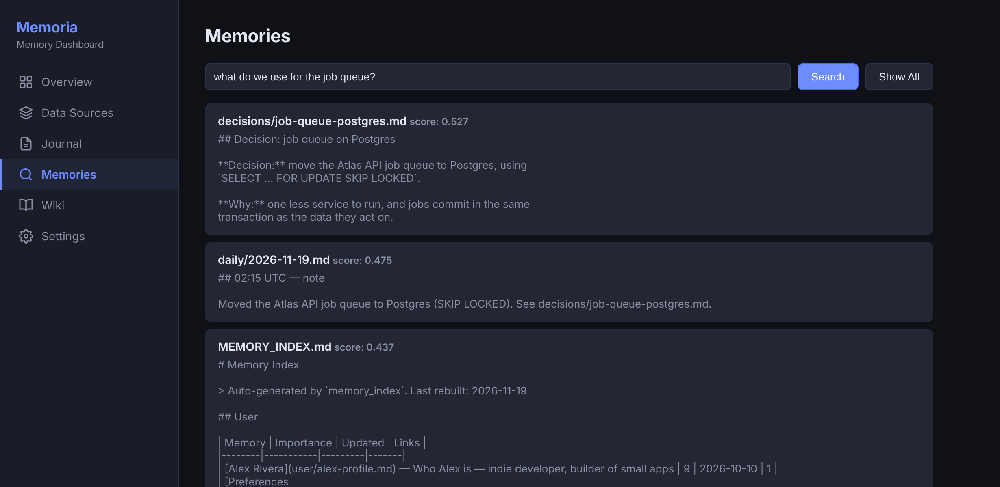

Open-source MCP server
Memoria
Long-term memory for Claude, as
a Markdown repo you own
.
in Claude Code
/plugin
marketplace add Agripp87/memoria_mcp
/plugin
install memoria@memoria
github.com/Agripp87/memoria_mcp
· Apache-2.0
Memoria
Illustration · Memoria output is real, from the demo store